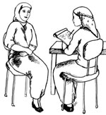

In this study session you will learn the difference between health promotion, health education, health screening and disease prevention, and learn about different methods of communicating health education messages respectfully and compassionately.
You will also learn how to educate and engage individuals, groups, opinion leaders and community members in the promotion and better utilisation of antenatal care services. Exactly the same principles apply to promoting the uptake of health services for labour and delivery, and postnatal care — as you will see in the next two Modules. Finally, we show you the steps in planning health education activities aimed at reducing maternal and newborn mortality by increasing the antenatal care coverage rate. You can apply these same steps to health promotion activities with other aims, for example increasing the uptake of family planning services.